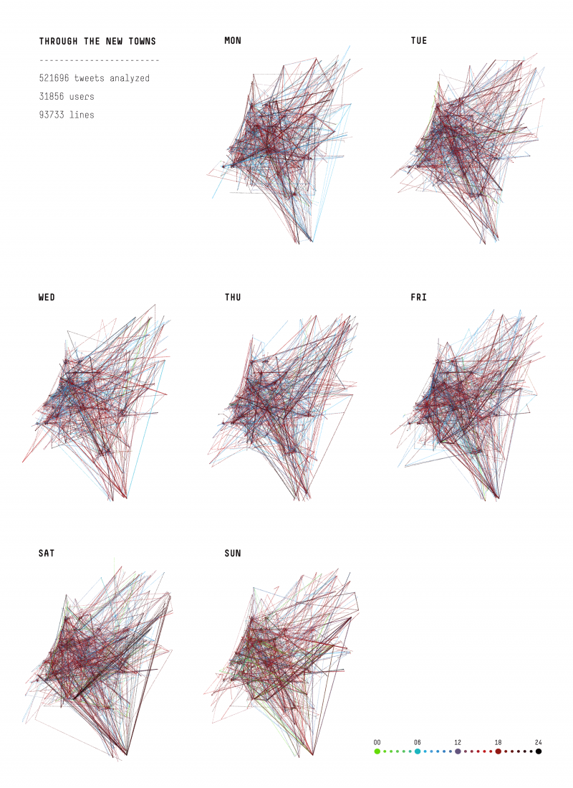
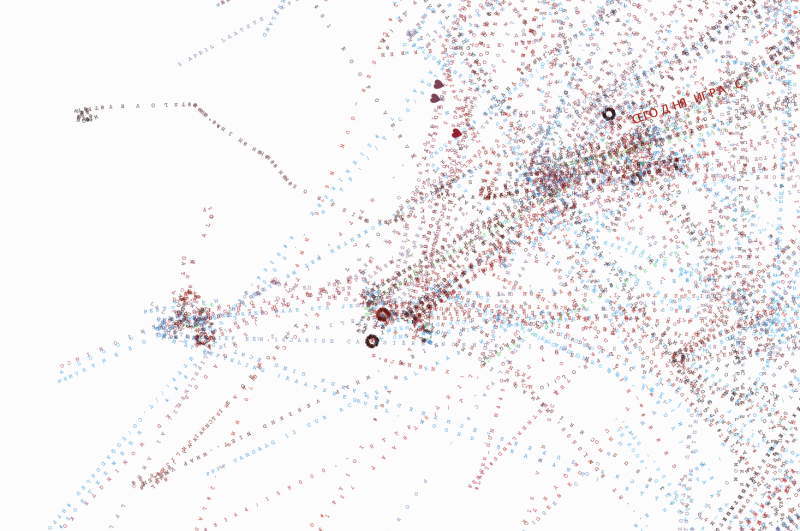
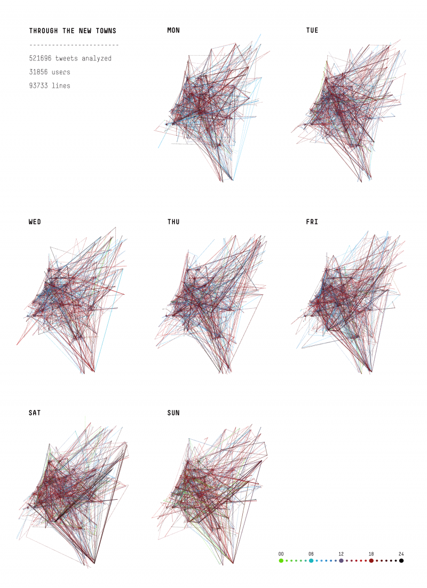
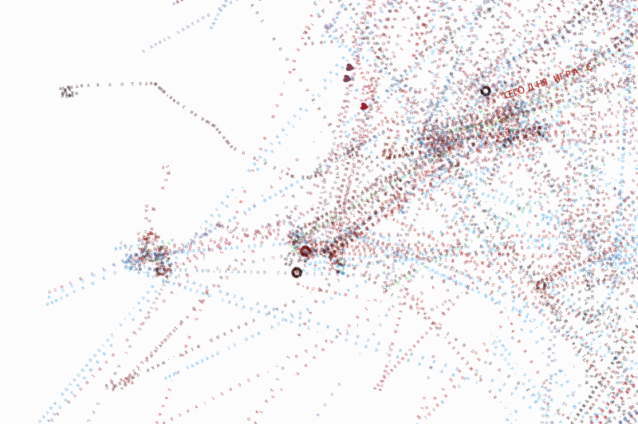

Cover for the 2/2013 issue of Dutch magazine Stedenbouw + Ruimtelijke Ordening. The theme of the issue is New Towns, also called planned communities.
The visualization shows the routes of people passing through the New Towns throughout their day. The lines that connect the cities contain the text of the tweets, and the color of the letters represents the time of the day when the tweet was posted.
The policy for the former growing centers has constantly been accompanied by discussions about what their suburbs actually are. The new cities are in fact originated in the tension between urbanity and sub-urbanity. The dominant discourse is that they are not urban enough. There has been much criticism of their lack of urban amenities, identity and historical and spatial layering. Another, more recent discourse is about decay: a gradual process of decline has be observed in the new towns. But despite their bad reputation with outsiders, most residents of the New Towns seem to be satisfied, as suggested by a number of urban sociological studies in Zoetermeer, Nieuwegein and Almere.
Geolocalized tweets constitute a good data pool to look at. From about half million of tweets spanning the period of a week, we filtered out only those by users that are related to one or more Dutch New Towns. In this way, the conversations of people related to these towns create a typographic cloud shaped like the country. Cover typography by Max Kisman.